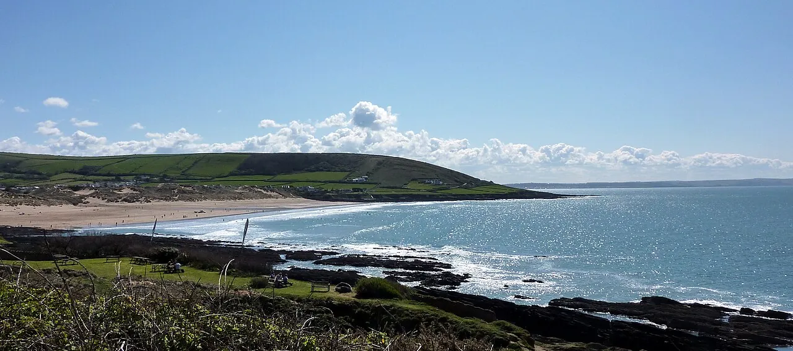

Croyde Bay
Devon, Royaume-Uni · surf, bodyboard

Baie du nord du Devon réputée pour ses vagues creuses à marée basse. Le cœur du surf anglais avec les villages de Saunton et Woolacombe.
- Lieu
- Devon, Royaume-Uni
- Niveau
- Intermédiaire
- Activités
- surf, bodyboard
- Type d'eau
- Mer / océan
- Coordonnées
- 51.13, -4.24 (position approximative du secteur)
Dangers à connaître
- Vagues creuses à marée basse.
- Eau fraîche : combinaison indispensable.
Le conseil d'Ocean Buddy
Surfe à marée basse pour les vagues creuses, marée haute pour un shore break court.
Ouvrir dans Ocean Buddy Télécharger sur l'App Store
Source : Fiche Ocean Buddy · septembre 2026 · à vérifier localement.